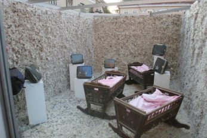

"The Rooms"
Performance/installation that led visitors through the evolution of mankind represented by five rooms, daring them to find their own place in it. The installation was presented in July 2007, in Novi sad, Serbia (Infantfusion, INFANT - International Festival of Alternative and New Theatre).
Concept: Kristian Al Droubi - Realization: Kristian Al Droubi, Vladilsav Curcin, Visnja Obradovic, Sanja Cekov, David Grabovac